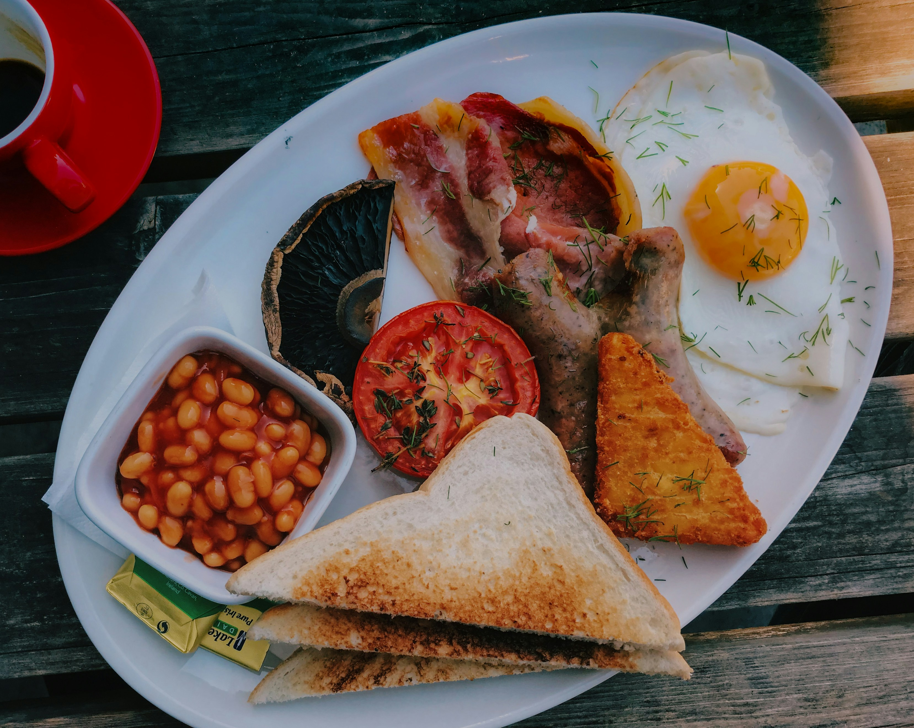
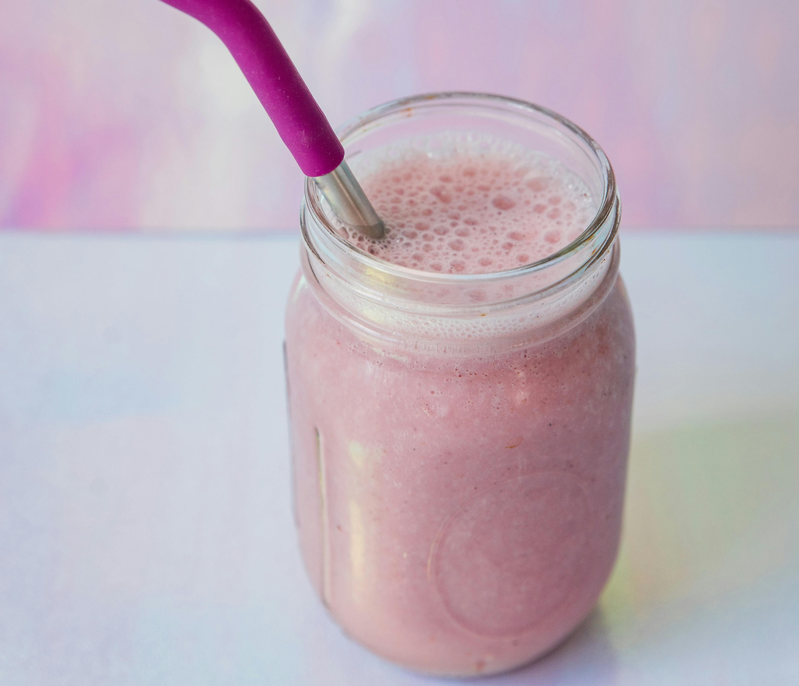
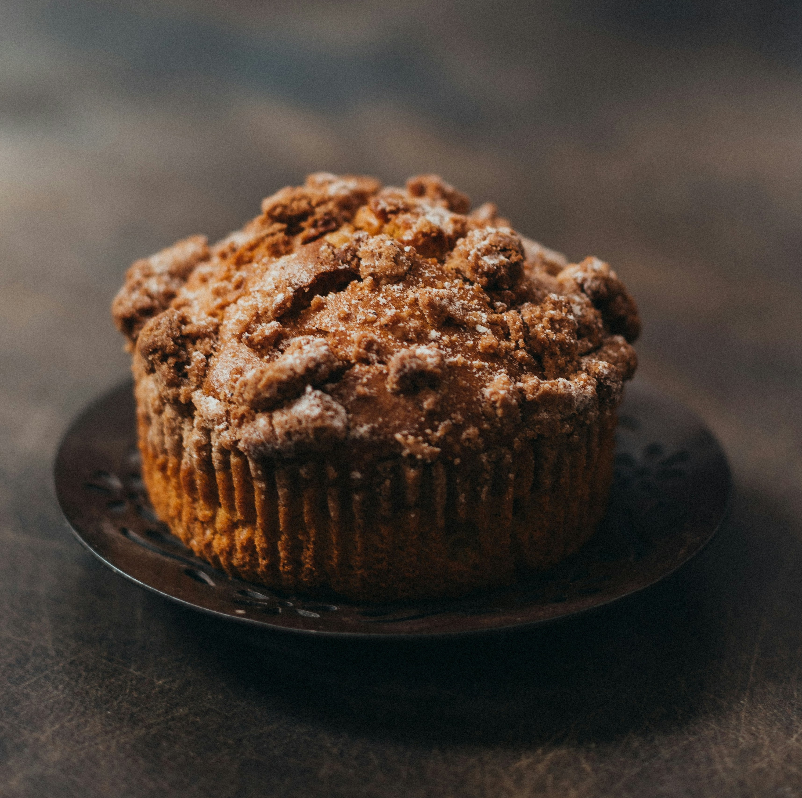
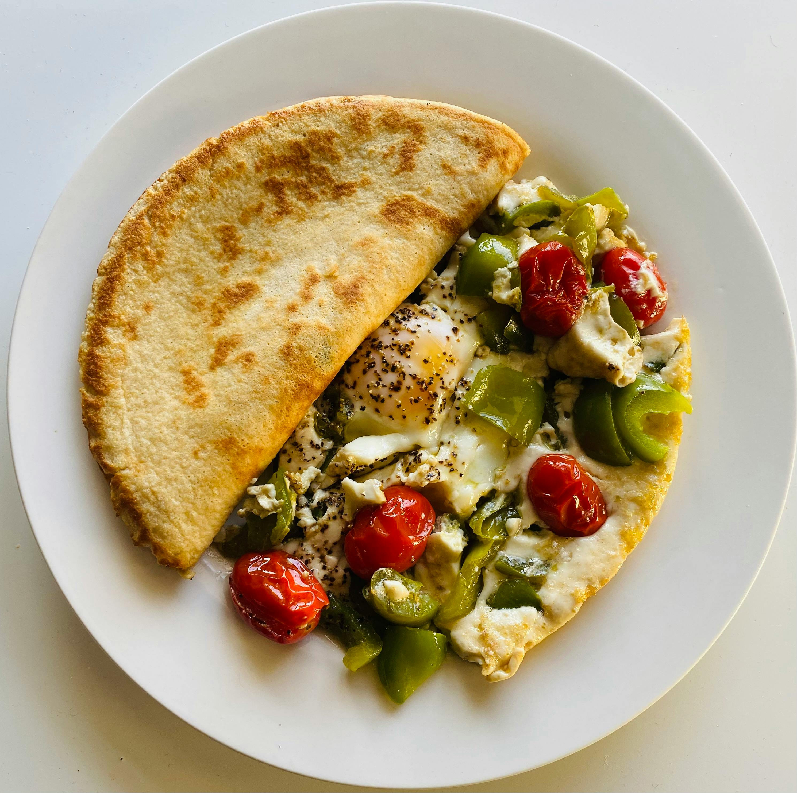

Whats For Breakfast?

American pancakes
Ingredients
- 200g self-raising flour
- 1 tbsp golden caster sugar
- 3 eggs
Read more
- 25g melted butter
- 200ml milk
- vegetable oil, for cooking
- maple syrup
Method
- 1. Mix 200g self-raising flour, 1 ½ tsp baking powder, 1 tbsp golden caster sugar and a pinch of salt together in a large bowl.
Read more
- 2. Whisk together either with a balloon whisk or electric hand beaters until smooth then pour into a jug.
- 3. Heat a small knob of butter and 1 tsp of oil in a large, non-stick frying pan over a medium heat. When the butter looks frothy, pour in rounds of the batter, approximately 8cm wide. Make sure you dont put the pancakes too close together as they will spread during cooking. Cook the pancakes on one side for about 1-2 mins or until lots of tiny bubbles start to appear and pop on the surface. Flip the pancakes over and cook for a further minute on the other side. Repeat until all the batter is used up.
- 4. Serve your pancakes stacked up on a plate with a drizzle of maple syrup and any of your favourite toppings.

English Breakfast
Ingredients
- 4 rashers
- 4 brown mushrooms
- 4 egg
- 2 tomatoes
Read more
- 2 pork sausages
- i small can of baked beans
- 3 thyme sprigs, plus extra to serve
Method
- 1. Fry the onions until starting to turn golden brown. Add the crushed garlic and paprika and cook for 1 min more, add the beans, chopped tomatoes and bring to the boil. Simmer and cook for 10-12 mins, stirring occasionally. Cover and set aside.
Read more
- 2. Meanwhile, toss the mushrooms, thyme and cherry tomatoes in a roasting tin with the remaining garlic and oil. Roast for 12 mins until the mushrooms and tomatoes are soft, then remove from the oven and cover to keep warm. Turn the grill to its highest setting. Put the chipolatas on a foil-lined baking sheet and grill for 4-5 mins on each side, or until golden brown and cooked through.
- 3. Crack the eggs into a small bowl. Bring a pan of lightly salted water to the boil and swirl vigorously with a wooden spoon to create a whirlpool. Once the whirlpool has almost subsided, tip in one egg, then lower the heat and gently cook for 3 mins. Scoop out with a slotted spoon, transfer to a plate and repeat with the remaining eggs. Serve the roasted veg with the sausages, eggs and beans, season and scatter with thyme leaves.

Breakfast Smoothie
Ingredients
- 1 banana
- 80g soft fruit strawberries, blueberries, and mango all work well
- 150ml milk
- 1 tsp honey
- 1 tsp vanilla extract
Method
- 1. Put all the ingredients in a blender and whizz for 1 min until smooth.
- 2. Pour the banana oat smoothie into two glasses to serve.

Vegan Breakfast Muffins
Ingredients
- 150g muesli mix
- 150g muesli mix
- 160g plain flour
- 1 tsp baking powder
Read more
- 250ml sweetened soy milk
- 1 apple, peeled and grated
- 2 tbsp grapeseed oil
- 3 tbsp nut butter
- 4 tbsp demerara sugar
Method
- 1. Line a muffin tin with cases. Mix 100g muesli with the light brown sugar, flour and baking powder in a bowl. Mix the remaining muesli with the demerara sugar, remaining butter and the pecans.
Read more
- 2. Bake for 25-30 mins or until the muffins are risen and brown. Will keep for two to three days in an airtight container or freeze for one month. Refresh in the oven before serving.
.webp)
Oats Porridge
Ingredients
- 100g frozen raspberries
- 150g porridge oats
- 100ml milk
- 1 banana, sliced
Read more
- 2 tbsp smooth almond butter
- 1 tbsp goji berries
- 1 tbsp chia seeds
Method
- 1. Tip half the raspberries and all of the orange juice in a pan. Simmer until the raspberries soften, about 5 mins.
read more
- 2. Meanwhile stir the oats, milk and 450ml water in a pan over a low heat until creamy. Top with the raspberry compote, remaining raspberries, orange slices, banana, almond butter, goji berries and chia seeds.

Veggie Omelette
Ingredients
- 1 tsp sunflower oil
- 3 eggs, beaten
- 1 tsp butter
- 1 banana, sliced
Read more
- 1 chopped green pepper
- 3 cherry tomatoes
Method
- 1. Season the beaten eggs well with salt and pepper. Heat the oil and butter in frying pan over a medium-low heat until the butter has melted.
Read more
- 2. Pour the eggs into the pan, tilt the pan ever so slightly from one side to another to allow the eggs to swirl and add the chopped peppers and the half slice cherry tomatoes.
- 3. Cover the surface of the pan completely. Let the mixture cook for about 20 seconds, take it out and serve.